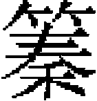

禮志七
宣聖廟 闕里廟 郡縣宣聖廟 嶽鎮海瀆 嶽鎮海瀆常祀 風師雨師 七祀 三皇廟 武成王廟 前代帝王廟 周公廟 名山大川忠臣義士祠 泉州神女 功臣祠 城隍 國俗祭祀
宣聖廟：太祖始置於燕京。
中統二年，詔：「先聖廟，國家歲時致祭，諸儒月朔釋奠，宜洒掃清潔。今後禁約諸官員使臣及管工匠官，毋得於廟内褻瀆，違者罪之。」三年，重修宣聖廟成。
至元十年二月，中書省議准：「衣冠所以彰貴賤，表誠敬，况國家大禮，先聖先師，不必援釋老二家之例。凡預執事官員及陪位諸儒，自當謹嚴儀禮以行。其事除執事官已各依品級製造公服外，陪位諸儒自備襴帶唐巾，以行釋奠之禮。」
大德十年，建文宣王廟於京師，行釋奠禮，牲用太牢。
至大元年秋七月，加號先聖曰「大成至聖文宣王」。
延祐三年秋七月，詔釋奠於先聖。以顔子、曾子、子思、孟子配享。封孟子父爲邾國公，母爲邾國宣獻夫人。皇慶二年六月，以許衡從祀，又以先儒周惇頤、程顥、程頤、張載、邵雍、司馬光、朱熹、張栻、吕祖謙從祀。
至順元年，以漢儒董仲舒從祀。齊國公叔梁紇加封啟聖王；魯國太夫人顔氏，啟聖王夫人；顔子，兖國復聖公；曾子，郕國宗聖公；子思，沂國述聖公；孟子，鄒國亞聖公；河南伯程顥，豫國公；伊陽伯程頤，洛國公。是年十一月，兖國復聖公新廟落成。
元統二年，改封顔子考曲阜伯爲杞國公，諡文裕；妣齊姜氏爲杞國夫人，諡端獻夫人；戴氏兖國夫人，諡貞素。又以益都鄒縣牧地三十頃給常祀。
至正十九年，以先儒楊時、李侗、胡安國、蔡沈、真德秀從祀，俱贈太師。追封時，吴國公、侗，越國公；安國，楚國公；沈，建國公；德秀，福國公。二十二年，追諡朱熹父爲獻靖，改封熹齊國公。
其祝幣之式：祝版三，各一尺二寸，廣八寸，木用楸梓柏，文曰：「維年月日，皇帝敬遣某官等，致祭於大成至聖文宣王。」於先師曰：「維年月日，某官等致祭於某國公。」幣三，用絹，各長一丈八尺。
其牲齊器皿之數：牲用牛一、羊五、豕五。以犧尊實泛齊，象尊實醴齊，皆三，有上尊；加羃，有勺，設堂上。太尊實泛齊，山罍實醴齊，有上尊。著尊實盎齊，犧尊實醴齊，象尊實沈齊，壺尊實三酒，皆有上尊，設堂下。盥洗位，在阼階之東。以象尊實醴齊，有上尊，加羃有勺，設於兩廡近北。盥洗位在階下近南。籩十，豆十，簠二，簋二，登三，鉶三，俎三，有毛血豆，正配位同。籩、豆皆二，簋一，簠一，俎一，從祀皆同。凡銅之器六百八十有一：宣和爵坫一，豆二百四十有八，簠、簋各一百一十有五，登六，犧尊、象尊各六，山尊二，壺尊六，著尊、太尊各二，罍二，洗二，龍杓二十有七，坫二十有八，爵一百一十有八。竹木之器三百八十有四：籩二百四十有八，篚三，俎百三十有三。陶器三，瓶二，香爐一。籩巾二百四十有一，簠簋巾二百四十有八，俎巾百三十有三，黄巾蒙單十。
其樂登歌。
其日用春秋二仲月上丁，有故改用中丁。
其釋奠之儀：
省牲：前期一日晡時，三獻官，監祭官各具公服，詣省牲所阼階，東西向立，以北爲上。少頃，引贊者，引三獻官，監祭官巡牲一匝，北向立，以西爲上。侍禮牲者折身曰「充」，贊者曰「告充」，畢，禮牲者又折身曰「腯」，贊曰「告腯」，畢，贊者復引三獻官、監祭官詣神廚，視滌溉畢，還齋所，釋服。
釋奠：是日丑前五刻，初獻官及兩廡分奠官二員，各具公服於幕次，諸執事者具儒服，先於神門外西序東向立，以北爲上。明贊、承傳贊先詣殿庭前再拜畢，明贊升露階東南隅西向立，承傳贊立於神門階東南隅西向立。掌儀先引諸執事者各司其事，引贊者引初獻官、兩廡分奠官點視陳設。引贊者進前曰「請點視陳設」。至階，曰「升階」。至殿簷下，曰「詣大成至聖文宣王神位前」。至位，曰「北向立」。點視畢，曰「詣兗國公神位前」。至位，曰「東向立」。點視畢，曰「詣鄒國公神位前」。至位，曰「西向立」。點視畢，曰詣「東從祀神位前」。至位，曰「東向立」。點視畢，曰「詣西從祀，神位前」。至位，曰「西向立」。點視畢，曰「詣酒尊所」。曰「西向立」。點視畢，曰「詣三獻爵洗位」。至階，曰「降階」。至位，曰「北向立」。點視畢，曰「詣三獻官盥洗位」。至位，曰「北向立」。點視畢，曰「請就次」。
方初獻，點視時，引贊二人各引東西廡分奠官曰「請詣東西廡神位前」。至位東曰東，西曰西。向立。點視畢，曰「詣先儒神位前」。至位，曰「南向立」。點視畢，曰「退詣酒尊所」。至酒尊所，東西向立。點視畢，曰「退詣分奠官爵洗位。」至位，曰「南向立」。點視畢，曰「請就次」。西廡分奠官點視畢，引贊曰「請詣望瘞位」。至位，曰「北向立」。點視畢，曰「請就次」。初獻官釋公服，司鐘者擊鐘，初獻以下各服其服，齊班於幕次。
掌儀點視班齊，詣明贊報知，引禮者引監祭官、監禮官就位。進前曰「請就位」。至位，曰「就位，西向立」。明贊唱曰「典樂官以樂工進，就位」，承傳贊曰「典樂官以樂工進，就位」。明贊唱曰「諸執事者就位」，承傳贊曰「諸執事者就位」。明贊唱曰「諸生就位」，承傳贊曰「諸生就位」，引班者引諸生就位。明贊唱曰「陪位官就位」，承傳贊曰「陪位官就位」，引班者引陪位官就位。明贊唱曰「獻官就位」，承傳贊曰「獻官就位」，引贊者進前曰「請就位」。至位，曰「西向立」。明贊唱曰「闢户」，俟户闢，迎神之曲九奏。
樂止，明贊唱曰「初獻官以下皆再拜」，承傳贊曰「鞠躬」，「拜」，「興」，「拜」，「興」，「平身」。明贊唱曰「諸執事者各司其事」。俟執事者立定，明贊唱曰「初獻官奠幣」。引贊者進前曰「請詣盥洗位」。盥洗之樂作，至位，曰「北向立」。搢笏，盥手，帨手，出笏，樂止。及階，曰「升階」。升殿之樂作。樂止，入門，曰「詣大成至聖文宣王神位前」。至位，曰「就位，北向立，稍前」。奠幣之樂作。搢笏跪，三上香，奉幣者以幣授初獻。初獻受幣奠訖，出笏就拜，興，平身，少退，再拜，鞠躬，拜，興，拜，興，平身。曰「詣兖國公神位前」。至位，曰「就位，東向立」。奠幣如上儀。曰「詣鄒國公神位前」。至位，曰「就位，西向立」。奠幣如上儀。樂止，曰「退復位」。及階，降殿之樂作。樂止，至位，曰「就位，西向立」。
俟立定，明贊唱曰「禮饌官進俎」。奉俎之樂作，乃進俎。樂止，進俎畢。明贊唱曰「初獻官行禮」，引贊者進前曰「請詣盥洗位」。盥洗之樂作，至位，曰「北向立」。搢笏，盥手，帨手，出笏。請詣爵洗位，至位，曰「北向立」。搢笏，執爵，滌爵，拭爵，以爵授執事者，如是者三，出笏。樂止，曰「請詣酒尊所」。及階，升殿之樂作，曰「升階」。樂止，至酒尊所，曰「西向立」。搢笏，執爵，舉羃，司尊者酌犧尊之泛齊，以爵授執事者，如是者三，出笏。曰「詣大成至聖文宣王神位前」。至位，曰「就位，北向立」。酌獻之樂作，稍前，搢笏跪，三上香，執爵三祭酒，奠爵，出笏，樂止。祝人東向跪讀祝，祝在獻官之左。讀畢，興，先詣左配位，南向立。引贊曰「就拜」，「興」，「平身」，「少退」，「再拜」，「鞠躬」，「拜」，「興」，「拜」，「興」，「平身」。曰「詣兖國公神位前」。至位，曰「就位，東向立」。酌獻之樂作。樂止，讀祝如上儀。曰「詣鄒國公神位前」。至位，曰「就位，西向立」。酌獻之樂作。樂止，讀祝如上儀。曰「退復位」。至階，降殿之樂作。樂止，至位，曰「就位，西向立」。
俟立定，明贊唱曰「亞獻官行禮」。引贊者進前曰「請詣盥洗位」。至位，曰「北向立」。搢笏，盥手，出笏。請詣爵洗位，至位，曰「北向立」。搢笏，執爵，滌爵，拭爵，以爵授執事者，如是者三，出笏。請詣酒尊所，曰「西向立」。搢笏，執爵，舉羃，司尊者酌象尊之醴齊。以爵授執事者，如是者三，出笏。曰「詣大成至聖文宣王神位前」。至位，曰「就拜，北向立」。酌獻之樂作。稍前，搢笏跪，三上香，執爵三祭酒，奠爵出笏，就拜，興，平身，少退，鞠躬，拜，興，拜，興，平身。曰「詣兖國公神位前」。至位，曰「東向立」。酌獻如上儀。曰「詣鄒國公神位前」。至位，曰「西向立」。酌獻如上儀。樂止，曰「退復位」。及階，曰「降階」。至位，曰「就位，西向立。」
明贊唱曰「終獻官行禮」，引贊者進前曰「請詣盥洗位」，至位，曰「北向立」。搢笏，盥手，帨手，出笏。請詣爵洗位，至位，曰「北向立。」搢笏，執爵，滌爵，拭爵，以爵授執事者，如是者三，出笏。請詣酒尊所。至階，曰「升階」。至酒尊所，曰「西向立」。搢笏，執爵舉羃，司尊者酌象尊之醴齊，以爵授執事者，如是者三，出笏。曰「詣大成至聖文宣王神位前」。至位，曰「就位，北向立，稍前」。酌獻之樂作。搢笏跪，三上香，執爵三祭酒，奠爵，出笏，就拜，興，平身，少退，鞠躬，拜，興，拜，興，平身。曰「詣兖國公神位前」。至位，曰「東向立」。酌獻如上儀。曰「詣鄒國公神位前」。至位，曰「西向立」。酌獻如上儀。樂止，曰「退復位」。及階，曰「降階」。至位，曰「就位，西向立」。
俟終獻，將升階，明贊唱曰「分獻官行禮」。引贊者分引東西從祀分獻官進前曰「詣盥洗位」。至位，曰「北向立」。搢笏，盥手、帨手，出笏。詣爵洗位，至位，曰「北向立」。搢笏執爵滌爵，拭爵，以爵授執事者，出笏。詣酒尊所。至階，曰「升階」。至酒尊所，曰「西向立」。搢笏，執爵舉羃，司尊者酌象尊之醴齊，以爵授執事者，出笏。詣東從祀神位前。至位，曰「就位，東向立，稍前」。搢笏跪，三上香，執爵三祭酒，奠爵，出笏，就拜，興，平身，少退，鞠躬，拜，興，拜，興，平身，退，復位。及階，曰「降階」。至位，曰「就位，西向立」。
引西從祀分獻官同上儀，唯至神位前東向立。俟十哲分獻官離位，明贊唱曰「兩廡分奠官行禮」。引贊者進前曰「詣盥洗位」。至位曰「南向立」。搢笏，盥手、帨手，出笏，詣爵洗位。至位，曰「南向立」。搢笏，執爵，滌爵，拭爵，以爵授執事者，出笏，曰「詣東廡酒尊所」。及階，曰「升階」。至酒尊所，曰「北向立」。搢笏，執爵，舉羃，酌象尊之醴齊，以爵授執事者，出笏，詣東廡神位前。至位，曰「東向立，稍前」。搢笏跪，三上香，執爵三祭酒，奠爵，出笏，就拜，興，平身，稍退，鞠躬，拜，興，拜，興，平身，退，復位。至階，曰「降階」。至位，曰：「就位，西向立」。
引西廡分奠官同上儀，唯至神位前，東向立作西向立。俟終獻十哲，兩廡分奠官同時復位。明贊唱曰「禮饌者徹籩豆」。徹豆之樂作，禮饌者跪，移先聖前籩豆，略離席，樂止。明贊唱曰「諸執事者退復位」。俟諸執事者至版位立定，送神之樂作。明贊唱曰「初獻官以下皆再拜」，承傳贊曰「鞠躬」，「拜」，「興」，「拜」，「興」，「平身」。樂止，明贊唱曰：「祝人取祝，幣人取幣，詣瘞坎」。俟徹祝幣者出殿門，北向立。望瘞之樂作，明贊唱曰「三獻官詣望瘞位」，引贊者進前曰「請詣望瘞位」。至位，曰「就位，北向立」。曰「可瘞」。埋畢，曰「退，復位」。至殿庭前，候樂止，明贊唱曰「典樂官以樂工出就位」。明贊唱曰：「闔户」。又唱曰「初獻官以下退詣圓揖位」，引贊者引獻官退詣圓揖位。至位，初獻在西，亞終獻及分獻以下在東，陪位官東班在東，西班在西。
俟立定，明贊唱曰「圓揖」。禮畢，退復位，引贊者各引獻官詣幕次更衣。
其飲福受胙，除國學外，諸處仍依常制。
闕里之廟：始自太宗九年，令先聖五十一代孫襲爵衍聖公元措修之，官給其費。而代祠之禮，則始於武宗。牲用太牢，禮物别給白金一百五十兩，綵幣表裏各十有三疋。四年冬，復遣祭酒劉賡往祀，牲禮如舊。延祐之末，泰定、天曆初載，皆循是典，錦幣雜彩有加焉。
郡縣宣聖廟：中統二年夏六月，詔：「宣聖廟及所在書院，有司歲時致祭，月朔釋奠。」八月丁酉，命開平守臣釋奠於宣聖廟。成宗即位，詔：「曲阜林廟，上都、大都、諸路府州縣邑廟學、書院，贍學土地及貢士莊，以供春秋二丁、朔望祭祀，修完廟宇。」自是天下郡邑廟學，無不完葺，釋奠悉如舊儀。
嶽、鎮、海瀆代祀。自中統二年始。凡十有九處，分五道。後乃以東嶽、東海、東鎮、北鎮爲東道，中嶽、淮瀆、濟瀆、北海、南嶽、南海、南鎮爲南道，北嶽、西嶽、后土、河瀆、中鎮、西海、西鎮、江瀆爲西道。既而又以驛騎迂遠，復爲五道，道遣使二人，集賢院奏遣漢官，翰林院奏遣蒙古官，出璽書給驛以行。中統初，遣道士，或副以漢官。至元十七年，立河瀆廟於河中。又敕建西海神廟於河中，春秋致祭，一視河瀆禮。二十一年，黄河清，遣官致祭。二十八年正月，帝謂中書省臣曰：「五嶽四瀆祠事，朕宜親往，道遠不可。大臣如卿等又有國務。宜遣重臣代朕祠之，漢人選名儒及道士習祀事者。」
其禮物，則每處歲祀銀香合一，重二十五兩，五嶽組金幡二、鈔五百貫，四瀆織金幡二、鈔二百五十貫，四海、五鎮銷金幡二、鈔二百五十貫，至則守臣奉詔使行禮。皇帝登寶位，遣官致祭，降香幡合如前禮，惟各加銀五十兩，五嶽各中統鈔五百貫，四瀆、四海、五鎮各中統鈔二百五十貫。或他有禱，禮亦如之。
其封號，至元二十八年春二月，如上東嶽爲天齊大生仁聖帝，南嶽司天大化昭聖帝，西嶽金天大利順聖帝，北嶽安天大貞玄聖帝，中嶽中天大寧崇聖帝。加封江瀆爲廣元順濟王，河瀆靈源弘濟王，淮瀆長源溥濟王，濟瀆清源善濟王，東海廣德靈會王，南海廣利靈孚王，西海廣潤靈通王，北海廣澤靈祐王。成宗大德二年二月，加封東鎮沂山爲元德東安王，南鎮會稽山爲昭德順應王，西鎮吴山爲成德永靖王，北鎮醫巫閭山爲貞德廣寧王，中鎮霍山爲崇德應靈王，敕有司歲時與嶽瀆同祀。是年，詔諸王駙馬毋擅祀嶽瀆。先是，元年六月，諸王也兒干遣使乘驛祀嶽瀆，命追其驛券，仍切責之，因有是命。至正十一年四月，加封河瀆神爲靈源神祐弘濟王，仍重建河瀆廟。
嶽、鎮、海、瀆常祀：至元三年夏四月，定歲祀嶽、鎮、海、瀆之制。正月，東嶽、鎮、海、瀆，土王日，祀泰山於泰安州，沂山於益都府界。立春日，祀東海於萊州界，大淮於唐州界。三月，南嶽鎮、海、瀆。立夏日，遥祭衡山。土王日，遥祭會稽山，皆於河南府界。立夏日，遥祭南海、大江於萊州界。六月，中嶽、鎮，土王日，祀嵩山於河南府界，霍山於平陽府界。七月，西嶽、鎮、海、瀆，土王日，祀華山於華州界，吴山於隴縣界。立秋日，遥祭西海、大河於河中府界。十月，北嶽、鎮、海、瀆，土王日祀恒山於曲陽縣界，醫巫閭於遼陽廣寧路界。立冬日，遥祭北海於登州界，濟瀆於濟源縣。祀官以所在守土官爲之。既有江南，乃罷遥祭。
時東平人趙天麟獻《太平金鏡策》，其論山川祭祀曰：「臣聞天子祭天地及天下之名山大川，諸侯祭社稷及名山大川之在其地者，大夫祭五祀，士祀宗廟，庶人祭祖考於寢。上得兼下，下不得僭上，皆有制以節之。今國家秩祀，既有禮部、太常寺、侍儀司以備其節文，又詔所在官司歲時致祭五嶽四瀆名山大川，歷代聖帝明王忠臣節士之載於祀典者，皆其宜也。竊見小民不安常典，妄祀明神，其類甚多，不可枚舉。夫東嶽者，天子告成之地，東方藩牧當祀之山。今乃有倡優之輩、貨殖之徒，每年春季，四方雲聚，有不遠千里而來者，干越禮典。褻瀆神明，亦已甚矣。伏望陛下申明前詔，使天下郡縣官各祭名山大川，聖帝明王忠臣節士之在其地者。凡下民當祭之神，則聽之。如非祀典所當祀而祀者，禁之，無令妄瀆。如是則巫風寢息，且亦富民之一助也。」
風、雨、雷師之祀：自至元七年十二月，大司農請於立春後丑日，祭風師於東北郊；立夏後申日，祭雷、雨師於西南郊。仁宗延祐五年，乃即二郊定立壇壝之制，其儀注闕。
七祀：曰户、司命、竈、中霤、門、厲、行。附祀神位於廟庭中街之東西向，其分爲四時之祭，並與宋同。宋制，立春祭户、祭司命，立夏祭竈，季夏土王日祭中霤，立秋祭門、祭厲，立冬祭行。惟中霤特祭則徧設之。各位籩、豆各二，簠、簋各一，尊二，俎二。
三皇廟：至元十二年，立伏羲、女媧、舜、湯等廟於河中、絳州、洪洞、趙城。元貞元年，初命郡縣通祀三皇，如宣聖釋奠禮。太皞伏羲氏以勾芒氏之神配，炎帝神農氏以祝融氏之神配，軒轅黄帝氏以風后氏、力牧氏之神配。黄帝臣俞跗以下十人，姓名載于醫書者，從祀兩廡。有司歲春秋二季行事，而以醫師主之。至正九年，江西湖東道廉訪使文殊奴言：「三皇廟每歲春秋祀事，命太醫官主祭，典禮未稱。請如國子學春秋釋奠，遣中書省臣代祀，一切禮儀仿其制。」中書付禮部集禮官定議以聞，制可，命太常司定三皇祭禮，工部範祭器，江淮行省製雅樂器。十年九月，致祭。宣徽院供禮饌，光禄勳供内醖，太府供金帛，廣源庫供香炬，大興府尹供犧牲，中書省奏擬三獻官以次定諸執事。前一日，内降御香，三獻官以下公服，備大樂儀仗，迎香至開天殿習祭儀。翰林院官具祝文曰：「皇帝敬遣某官某致祭。」
武成王：立廟於樞密院公堂之西，以孫武子、張良、管仲、樂毅、諸葛亮以下十人從祀。每歲春秋仲月上戊，以羊一、豕一、犧尊、象尊、籩、豆、俎、爵，樞密院遣官，行三獻禮。
前代帝王廟：堯帝廟在平陽。中統五年建。至元二十四年勅春秋二仲上丙日祀帝堯廟。舜帝廟，河東、山東濟南歷山、濮州、湖南道州皆有之。禹廟在河中龍門。中統三年賜名建極宫。至元元年七月，龍門禹廟成，命侍臣持香致敬，有祝文。十二年二月，立伏羲、女媧、舜、湯等廟於河中解州、洪洞、趙城。十五年四月，修會川縣盤古祠，祀之。二十四年閏二月，勅春秋二仲丙日，祀帝堯廟。致和元年，禮部移太常送博士議，舜、禹之廟合依堯祠故事，每歲春秋仲月上旬卜日，有司蠲潔致祭，官給祭物。至順元年三月，從太常奉禮郎薛元德言，彰德路湯陰縣北故羑里城周文王祠，命有司奉祀如故事。
周公廟：在鳳翔府岐山之陽。天曆二年六月，以岐陽廟爲岐陽書院，設學官，春秋釋奠周文憲王如孔子廟儀。凡有司致祭先代聖君名臣，皆有牲無樂，其祭器不用籩、簠、簋，儀非酌獻者，有司便服行禮，三上香，奠洒。
凡名山大川、忠臣義士之祠：所在有司祭之。其祀典之可考者：太祖十七年三月，封崑崙山爲玄極王，大鹽池爲惠濟王。至元四年，封昔木土山爲武定山［一］，其神曰武定公，泉爲靈淵，其神曰靈淵侯。泰定四年十月，改封建德路烏龍神爲忠顯靈澤普休孚惠王。致和元年四月，改封蒙山神爲嘉惠昭應王，洞庭神爲忠惠順利靈濟昭佑王。至元十四年，回水窩淵聖廣源王加封善佑崇山靈濟照應王；加封廣惠安邱雹泉靈霈侯［二］，追封靈霈公［三］。十六年，進封桑乾河洪濟公爲顯應洪濟公。十五年，封伯夷爲昭義清惠公，叔齊爲崇讓仁惠公。二十一年，加封衛輝路永清河神爲洪濟威惠王。大德三年，加解州鹽池神惠康王曰廣濟，資寶王曰永澤；浙西鹽官州海神曰靈威弘祐公；吴大夫伍員曰忠孝威惠顯聖王。延祐三年，敕衛輝、昌平修殷比干、唐狄仁傑祠。五年，加封楚大夫屈原爲忠節清烈公。泰定元年，加封廣德路山神張真人曰普濟寧國路山神，廣惠王曰福祐。二年，遣使祀武當、龍虎二山。置諫議書院於昌平，祀唐劉蕡。至正十八年，加封蕡文節昌平王。天曆元年，加封漢關羽爲顯靈義勇武安英濟王。至治二年，封蜀漢諸葛亮爲威烈神顯仁濟王，封唐柳州刺史柳宗元爲文惠昭靈公，加封唐司徒顔真卿爲貞烈文忠公。令有司歲時致祭。二年，命加諡漢長沙王芮爲長沙文惠王。至順元年，加封秦蜀郡太守李冰爲聖德廣裕英惠王，其子二郎神爲英烈昭惠靈顯仁裕王，賜伯夷叔齊廟額曰「聖清」。後至元元年，封微子爲仁靖公，箕子爲仁獻公，比干爲仁顯忠烈公；加封漢張飛爲武義忠顯英烈靈惠助順王。又封徽州土神汪華爲照忠廣仁武烈靈顯王，封真定滹沱河神爲昭佑靈源侯。三年，封晉郭璞爲靈應侯，封晉周處爲英義武惠正應王。五年，加封孝女曹娥爲慧感靈孝昭順純懿夫人。
泉州神女靈惠夫人：至元十五年，加號護國明著靈惠協己善虔顯濟天妃。天曆元年，加號護國庇民廣濟福惠明著天妃，賜廟號曰靈慈，直沽、平江，周涇、泉、福、興化等處皆有廟。皇慶以來，歲遣使齎香遍祭，金幡一，合銀一錠，付平江官漕司及本府官，用柔毛酒醴便服行事。祝文云：「維年月日，皇帝特遣某官等致祭於護國庇民廣濟福惠明著天妃。」
功臣祠：至大四年，立淮安忠武王伯顔廟於杭州，春秋二仲月次戊致祭，祀以少牢，用籩、豆、簠、簋，行酌獻禮，若魏國文正公許衡廟在大名，河南王阿朮廟在揚州。皇慶元年，又命河南行省建丞相阿朮祠堂。延祐五年，敕杭州守臣歲時致祭。至治二年，賜祭田二十頃。東平忠憲王安童廟在東平，順德忠獻王哈剌哈孫廟在順德、武昌者，皆歲時致祭。後至元六年，建太師木華黎祠堂。是年，又立阿嘍罕、伯顔祠堂，皆家廟，官爲建之者。
城隍廟：至元五年建於上都。七年，大都路建廟，封神曰祐聖王。天曆二年八月，加王及夫人號曰護國保寧。
國俗祭祀：每歲十二月下旬擇日於西鎮國寺内牆下，灑掃平地，太府監供綵幣，中尚監供細氈鍼線，武備寺供弓箭、環刀，束稈草爲人形一，爲狗一，剪雜色綵段爲之腸胃，選達官世家之貴重者交射之。非别速、札剌爾、乃蠻、忙古、台列班、塔達、珊竹、雪泥等氏族，不得與列。射至糜爛，以羊酒祭之。祭畢，帝后及太子嬪妃併射者，各解所服衣，俾蒙古巫覡祝讚之。祝讚畢，遂以與之，名曰脱災。國俗謂之射草狗。
每歲十二月十六日以後，選日，用白黑羊毛爲線，帝后及太子，自頂至手足，皆用羊毛線纏繫之，坐于寢殿。蒙古巫覡念咒語，奉銀槽貯火，置米糠于其中，沃以酥油，以其煙薰帝之身，斷所繫毛線，納諸槽内。又以紅帛長數寸，帝手裂碎之，唾之者三，併投火中。即解所服衣帽付巫覡，謂之脱舊災、迎新福云。
世祖至元七年，以帝師八思巴之言，於大明殿御座上置白傘蓋一，頂用素段，泥金書梵字於其上，謂鎮伏邪魔護安國刹。自後每歲二月十五日，於大殿啟建白傘蓋佛事，用諸色儀仗社直，迎引傘蓋，周遊皇城内外，云與衆生祓除不祥，導迎福祉。歲正月十五日，宣政院同中書省奏，請先期中書奉旨移文樞密院，八衛撥傘鼓手一百二十人，殿後軍甲馬五百人，擡舁監壇漢關羽神轎軍及雜用五百人。宣政院所轄宫寺三百六十所，掌供應佛像、壇面、幢幡、寶蓋、車鼓、頭旗三百六十壇，每壇擎執擡舁二十六人，鈸鼓僧一十二人。大都路掌供各色金門大社一百二十隊，教坊司雲和署掌大樂鼓、板杖鼓、篳篥、龍笛、琵琶、筝、

七色，凡四百人。興和署掌妓女雜扮隊戲一百五十人，祥和署掌雜把戲男女一百五十人，儀鳳司掌漢人、回回、河西三色細樂，每色各三隊，凡三百二十四人。凡執役者，皆官給鎧甲袍服器仗，俱以鮮麗整齊爲尚，珠玉金繡，裝束奇巧，首尾排列三十餘里，都城士女聚觀。禮部官點視諸色隊仗，刑部官巡綽喧鬧，樞密院官分守城門，而中書省官一員總督視之。先二日，於西鎮國寺迎太子遊四門，舁座塑像，具儀仗入城。十四日，帝師率梵僧五百人，於大明殿内建佛事。至十五日，恭請傘蓋於御座，奉置寶輿，諸儀衛隊仗列於殿前，諸色社直暨諸壇面列於崇天門外，迎引出宫。至慶壽寺，具素食，食罷起行，從西宫門外垣海子南岸，入厚載紅門，由東華門過延春門而西。帝及后妃、公主於五德殿門外，搭金脊五殿綵樓而觀覽焉。及諸隊仗社直送金傘還宫，復恭置御榻上。帝師僧衆作佛事，至十六日罷散。歲以爲常，謂之游皇城。或有因事而輟，尋復舉行。夏六月中，上都亦如之。【校勘記】
［一］「武定山」，原作「武成山」，據《元史》卷六本紀第六《世祖三》改。本書《世祖本紀二》作「武定山」不誤。
［二］「雹泉靈霈侯」，「泉」原作「衆」，「霈」原作「沛」，據《元史》卷九本紀第九《世祖六》改。
［三］「追封」，原作「加封」，據《元史》卷九本紀第九《世祖六》改。
本章完!